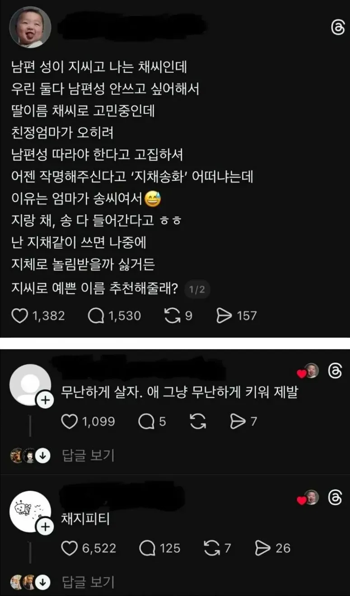

그냥 지채문해라

그냥 지채문해라
지채상금
지성팍
지렁이
지장보살
지소미아
지성팍 이렇게 좋은 이름이 많은데
놀림 받는거 생각하면서 엄마성씨를 쓴다고?
막줄에 지씨로 지어달라는데?
채채퐁 김지퐁
채지방 좋네
지상렬
지는 중간글자로 잘 쓰니까 걍 성 떼고 짓듯 외자로 가는것도 좋지않나 지은 지유 지우 같은
지채 하지마
지덕채
걍 지은채 이런거 하면 되지
지드래곤
채지구방위대후레쉬맨
채지라이야
지랄하네
나도 부모성 쓰기하고 외자하려다 안이뻐서 그냥 와이프 가운데이름 애기 가운데이름으로 하기로함
아 어디가서 드립좀 친다는 소리 듣는데 채지피티 이길 드립이 생각안난다
지채장애인
모전녀전
딱 그 어미의 그 딸
채지방